4 Scale
4.1 Scaling Laws and Emergence
Chapter 3 ended with an ability that nobody had designed. GPT-3 learned tasks from examples placed in its prompt, the in-context learning of Definition 3.11, and Brown and colleagues found that the gap between its zero-shot and few-shot results often grew with the size of the model (Brown et al. 2020). The architecture of §3.3 changed little between GPT-1 and GPT-3: GPT-2 moved the normalisation to the input of each sub-layer, and GPT-3 alternated dense attention with locally banded sparse attention. What changed most were three numbers: the parameters, the training text and the computation spent on them, which Table 3.3 lists. This section asks how the performance of a model depends on those numbers, and whether the result of a training run can be known before the run is made.
The question is practical before it is scientific. GPT-3 had 175 billion parameters and was trained on 300 billion tokens. Both numbers were fixed before training began, and so was the hardware that would carry out the work. The run was carried out on a cluster of graphics processors provided by Microsoft (Brown et al. 2020); OpenAI did not publish the cost of the run or its length. Once it had started, its size could not be changed, and its outcome, the loss on held-out text, could be measured only when it had finished. A run of this size is also too expensive to repeat with different settings. The problem this section addresses is therefore one of commitment: the whole budget must be committed in advance, and the only way to learn what it buys is to spend it.
A small run cannot answer the question by itself, since it says nothing about the large model we actually want. What would help is a rule, measured on runs we can afford, that extends to the run we cannot. Such a rule must meet three requirements. It must be visible on cheap runs, because the expensive run is the one we cannot use as a test. It must hold with the same form across many orders of magnitude, so that it can be carried from the cheap runs to the expensive one. And it must say how to divide a fixed budget between a larger model and more data, because that division is also fixed before the run starts. The first two subsections below meet the first two requirements. The third requirement turned out to be harder, and the first answer to it was wrong.
Counting compute
We need a unit for the cost of training. The natural one is the number of arithmetic operations performed.
Definition 4.1 (Definition) A floating-point operation (FLOP) is one addition or one multiplication of two real numbers represented in floating point. The training compute \(C\) of a model is the total number of floating-point operations performed during its training.
The unit is easy to confuse with FLOP/s, a rate of operations per second that describes hardware. Training compute is a count, not a rate. It is fixed by the model and the data, and the hardware decides only how long it takes to perform.
For a Transformer the count has a simple approximate form. Almost all the work of a forward pass is in matrix products, in which every parameter of a weight matrix is used once per token: it multiplies one input value and the product is added to a running sum. That is two operations per parameter per token. The backward pass of §2.1 computes two gradients for each weight matrix, one with respect to its input, which is passed on to the layer below, and one with respect to the weights themselves. Each is a matrix product of the same size as the forward one, so the backward pass costs about twice the forward pass, four operations per parameter per token. In this chapter \(N\) and \(D\) follow the scaling literature and no longer mean the depth and width of §3.3: \(N\) is the number of parameters and \(D\) the number of training tokens. A model with \(N\) parameters trained on \(D\) tokens therefore needs \[ C \approx 6ND \tag{4.1}\] floating-point operations, two for the forward pass and four for the backward pass. The count leaves out the attention scores, whose cost grows with the context length rather than with the parameters, and small terms such as the normalisations. For models of the size of GPT-3 these are a few per cent of the total. For GPT-3 itself, Equation 4.1 gives \[ C \approx 6 \times (1.75 \times 10^{11}) \times (3 \times 10^{11}) = 3.15 \times 10^{23} , \tag{4.2}\] about three hundred thousand billion billion operations.
The identity Equation 4.1 has a geometric reading that the rest of the section uses. If we draw the parameters on one axis and the tokens on the other, a budget \(C\) is the area \(ND\) of a rectangle, up to the factor of six. The same area can be a tall rectangle, a large model trained on few tokens, or a wide one, a small model trained on many. Every such rectangle costs the same, and their corners trace the hyperbola \(ND = C/6\). Figure 4.1 draws several of them. The question of how to spend a budget is the question of where to stand on this curve.
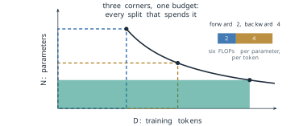
A straight line in logarithmic coordinates
We start with the cheapest experiment there is. Suppose we train six models of the same design on the same data, with 1, 5, 20, 80, 300 and 1,000 million parameters, and measure the loss of each on held-out text. The loss is measured in nats per token. It is the log-likelihood of Equation 3.27 with its sign reversed, averaged over the tokens and taken with natural logarithms. The values in Table 4.1 are those of the law that this subsection derives, so the example is idealised, but they have the shape that real runs of this kind show.
| Parameters \(N\) | 1M | 5M | 20M | 80M | 300M | 1B |
|---|---|---|---|---|---|---|
| Test loss \(L\) (nats per token) | 4.016 | 3.554 | 3.198 | 2.878 | 2.603 | 2.376 |
The loss falls as the model grows, but on ordinary axes the six points crowd against the left edge and bend. A straight line fitted to them by least squares has slope \(-1.16\) nats per billion parameters and crosses zero loss at about 2.9 billion parameters. That is not a prediction. A loss of zero would mean a model that assigns probability one to every next token of every text, which no model can do, since text itself is uncertain. The run we care about, at 175 billion parameters, lies about 55 times beyond the right end of a plot drawn to 3.2 billion. A straight line on linear axes cannot reach it honestly. Figure 4.2 shows the six runs, the fitted line and where it fails.
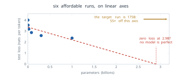
Now take logarithms of both quantities. The logarithms of the six model sizes are evenly spread, because the sizes grow by roughly constant factors, and the logarithms of the losses fall by nearly equal steps. Fitting a straight line to the pairs \((\log_{10} N, \log_{10} L)\) gives a slope of exactly \(-0.076\), and all six points lie on it. The change of axes does not alter what was measured. It changes only how the numbers are spaced, and the points were free to fall anywhere on the new grid.
A straight line in these coordinates is a specific kind of function. Write it with slope \(-\alpha\) and with its intercept expressed through a constant \(N_c\): \[ \log L = \alpha \log N_c - \alpha \log N . \tag{4.3}\] Collecting the two logarithms gives \(\log L = \alpha \log (N_c/N)\), and exponentiating both sides, \[ L(N) = \left(\frac{N_c}{N}\right)^{\alpha} . \tag{4.4}\] Each step can be reversed, so a straight line on doubly logarithmic axes and a power law are the same statement. The exponent is the slope of the line, and \(N_c\) is the size at which the line would reach a loss of one nat. Neither has a meaning beyond the fit. The form has a useful property. Multiplying \(N\) by a factor \(k\) multiplies the loss by \(k^{-\alpha}\), whatever \(N\) is, so each tenfold increase in size reduces the loss by the same proportion. With \(\alpha = 0.076\) that proportion is \(10^{-0.076} = 0.84\), a reduction of about 16 per cent per decade. A rule of this kind is scale-free, and that is exactly what the second requirement asked for.
Definition 4.2 (Definition) A neural scaling law is an empirical relation of the form of Equation 4.4 between the test loss of a model and one resource used to train it, such as the number of parameters, the number of training tokens or the training compute. It holds when the other resources are not limiting.
Extending the line of Table 4.1 to \(N = 1.75 \times 10^{11}\) gives \[ L = \left(\frac{8.8 \times 10^{13}}{1.75 \times 10^{11}}\right)^{0.076} = 502.9^{0.076} \approx 1.60 \tag{4.5}\] nats per token, a value read from a line fitted to runs at most one billion parameters in size. The six runs, the fitted line and its extension are drawn in Figure 4.3. Two cautions apply to the number. Kaplan and colleagues counted only the parameters outside the embedding matrices, and measured loss on their own WebText2 corpus, so 1.60 is the prediction of their law for a model of that size, not the measured loss of GPT-3, which was evaluated on different text.
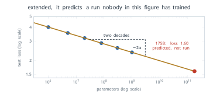
Three laws with one shape
The observation that error falls as a power of the amount of data was not new in 2020. Hestness and colleagues at Baidu had reported power laws for the generalisation error of models in translation, language modelling, image classification and speech recognition in 2017 (Hestness et al. 2017). The paper that made the idea central to language models was Scaling Laws for Neural Language Models, posted by Jared Kaplan, Sam McCandlish, Tom Henighan and seven colleagues at OpenAI in January 2020 (Kaplan et al. 2020). They trained decoder-only Transformers of the kind described in §3.3, with up to about 1.5 billion parameters, on WebText2, and measured the test loss as they varied one resource at a time. They found the same form three times: \[ L(N) = \left(\frac{N_c}{N}\right)^{\alpha_N}, \qquad L(D) = \left(\frac{D_c}{D}\right)^{\alpha_D}, \qquad L(C) = \left(\frac{C_c}{C}\right)^{\alpha_C} , \tag{4.6}\] with \(\alpha_N = 0.076\) and \(N_c = 8.8 \times 10^{13}\) parameters, \(\alpha_D = 0.095\) and \(D_c = 5.4 \times 10^{13}\) tokens, and \(\alpha_C = 0.050\) and \(C_c = 3.1 \times 10^{8}\) petaflop-days, where one petaflop-day is \(10^{15}\) operations per second sustained for a day, about \(8.64 \times 10^{19}\) operations. Some of the trends spanned, in their words, more than seven orders of magnitude. Figure 4.4 shows the three panels side by side.
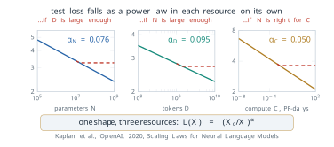
Each law carries a condition, and the conditions are where the laws stop. The law in \(N\) holds when the model is trained on enough data to approach convergence. The law in \(D\) holds for a model large enough not to be the bottleneck. The law in \(C\) holds when the compute is spent on the best choice of model size for that budget, a choice we return to below. Two further assumptions are not written in the equations. The first is that a fit measured on small and medium runs continues to hold at scales nobody had yet trained, which is the extrapolation the whole enterprise depends on. The second is that the loss can fall without limit, which it cannot. A power law with no constant term tends to zero, but natural text has an entropy of its own, and no model can predict it better than that. Kaplan and colleagues noted that the trends must eventually level off. The laws describe a range, not an asymptote.
The extrapolation was tested in public three years later. In its technical report on GPT-4, OpenAI described predicting the final loss of the model on an internal code dataset. The prediction came from a scaling law with an irreducible loss term, \(L(C) = aC^{b} + c\), fitted to models of the same method trained with at most one ten-thousandth of its compute, and the prediction matched the measured loss closely (OpenAI 2023). The report gives its axes in relative compute and bits per word and publishes no absolute values. Figure 4.5 shows the geometry of the claim, which is the part that matters: a fit made on cheap runs, extended four orders of magnitude, and a measured point landing on it.
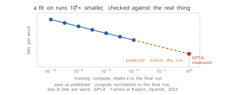
Splitting a fixed budget
The laws of Equation 4.6 meet the first two requirements. They do not yet meet the third. Each law describes what happens when one resource grows and the others are ample, but a real budget is fixed, and by Equation 4.1 a larger model on a fixed budget means fewer tokens. The question is where on the hyperbola of Figure 4.1 to stand, and how that point should move as the budget grows.
Definition 4.3 (Definition) For a training compute budget \(C\), the compute-optimal model size \(N_{\text{opt}}(C)\) and number of training tokens \(D_{\text{opt}}(C)\) are the values that minimise the test loss \(L(N, D)\) subject to the constraint \(6ND = C\) of Equation 4.1.
Kaplan and colleagues answered this question in the same paper. Fitting a joint law for the loss as a function of model size and training steps, they found that the compute-optimal size grows almost as fast as the budget, and the data much more slowly, \[ N_{\text{opt}} \propto C^{0.73}, \qquad D_{\text{opt}} \propto C^{0.27} . \tag{4.7}\] In their words, optimally compute-efficient training “involves training very large models on a relatively modest amount of data and stopping significantly before convergence” (Kaplan et al. 2020). A tenfold increase in budget should then go mostly into parameters, multiplying \(N\) by \(10^{0.73} = 5.4\) and \(D\) by only \(10^{0.27} = 1.9\). GPT-3, published four months later by a team that shared several authors with the scaling paper, was built in this spirit. Its 175 billion parameters were trained on 300 billion tokens, which is \[ \frac{D}{N} = \frac{3 \times 10^{11}}{1.75 \times 10^{11}} \approx 1.7 \tag{4.8}\] tokens per parameter. Figure 4.6 places it on the hyperbola of its own budget.
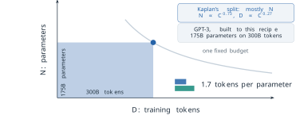
Two claims are now on the table, and they should be kept apart. The first is the law, that loss falls as a power of each resource. The second is the allocation, that a growing budget should go mostly into parameters. The allocation was derived from the law’s data, but it is a separate claim, and in 2022 it was shown to be wrong while the law survived.
Jordan Hoffmann, Sebastian Borgeaud, Arthur Mensch and nineteen colleagues at DeepMind asked the allocation question again in Training Compute-Optimal Large Language Models, presented at NeurIPS in 2022 (Hoffmann et al. 2022). They trained more than 400 models, from 70 million to over 16 billion parameters, on 5 to 500 billion tokens, and estimated the optimum in three independent ways. The second is the easiest to picture. Fix a budget \(C\). Train a series of models of different sizes, each on the number of tokens that spends exactly \(C\), so that every run sits on the same hyperbola. Plot the final loss of each run against its size. The result is a valley. Too small a model, trained on many tokens, lacks the capacity to use them. Too large a model, trained on few tokens, has not seen enough text to fill its capacity. Between the two lies a minimum, the compute-optimal size for that budget. Hoffmann and colleagues called the curve an IsoFLOP profile, since every point on it costs the same number of operations. Repeating the experiment at several budgets gives several valleys, and the line through their minima gives \(N_{\text{opt}}\) as a function of \(C\). Figure 4.7 shows the construction.
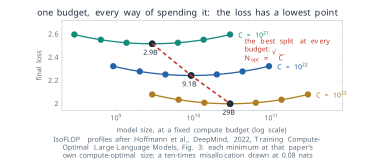
Each point in the figure is an entire training run, and each curve is a set of runs that cost the same. The line through the minima is neither a run nor a budget. It is a rule, the place where the best model size sits as the budget changes, and it is the quantity the allocation question asks for.
The third approach fits a formula to all the runs at once. Hoffmann and colleagues modelled the loss as a sum of three terms, \[ L(N, D) = E + \frac{A}{N^{\alpha}} + \frac{B}{D^{\beta}} , \tag{4.9}\] and fitted \(E = 1.69\), \(A = 406.4\), \(B = 410.7\), \(\alpha = 0.34\) and \(\beta = 0.28\) (Hoffmann et al. 2022). The form answers the second of the two assumptions noted under the three laws, that the loss can fall without limit. The constant \(E\) is the loss that no model can remove, the entropy of the text as far as this fit can see. The term \(A/N^{\alpha}\) is the excess loss due to a finite model, and \(B/D^{\beta}\) the excess due to finite data. The exponents here are not those of Equation 4.6, because the form is different: Kaplan’s laws have no constant term and fold everything into one power.
The form makes the cost of a fixed data set visible. Hold \(D\) at GPT-3’s 300 billion tokens. The data term is \[ \frac{410.7}{(3 \times 10^{11})^{0.28}} = 0.251 , \tag{4.10}\] so no model of any size trained on those tokens can go below \(1.69 + 0.251 = 1.941\). At 175 billion parameters the model term is \(406.4 / (1.75 \times 10^{11})^{0.34} = 0.061\), so by this fit GPT-3 sat only 0.061 nats above the floor that its data allowed. A model twice the size would lower the model term only to 0.048, removing about a fifth of that small excess. Raising \(D\) to 1.4 trillion tokens lowers the data term to 0.163 and the floor to 1.853. Only the data moves the floor. Figure 4.8 draws both cases.
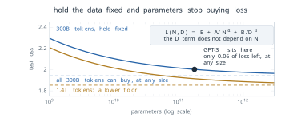
The compute-optimal split follows from Equation 4.9 by calculus. Substitute \(D = C/(6N)\) to put the loss on the hyperbola, \[ L(N) = E + A N^{-\alpha} + B \left(\frac{6N}{C}\right)^{\beta} , \] and set the derivative with respect to \(N\) to zero: \[ -\alpha A N^{-\alpha - 1} + \beta B \left(\frac{6}{C}\right)^{\beta} N^{\beta - 1} = 0 . \] Multiplying by \(N\) shows that at the optimum the two excess terms stand in a fixed ratio, \[ \alpha \frac{A}{N^{\alpha}} = \beta \frac{B}{D^{\beta}} . \tag{4.11}\] Putting \(D = C/(6N)\) back into Equation 4.11 and collecting the powers of \(N\) on one side gives \[ N^{\alpha + \beta} = \frac{\alpha A}{\beta B} \left(\frac{C}{6}\right)^{\beta} , \] and taking the root of order \(\alpha + \beta\) gives \[ N_{\text{opt}} = G \left(\frac{C}{6}\right)^{\frac{\beta}{\alpha + \beta}}, \qquad D_{\text{opt}} = G^{-1} \left(\frac{C}{6}\right)^{\frac{\alpha}{\alpha + \beta}}, \qquad G = \left(\frac{\alpha A}{\beta B}\right)^{\frac{1}{\alpha + \beta}} . \tag{4.12}\] With the fitted values the exponents are \(0.28/0.62 = 0.45\) and \(0.34/0.62 = 0.55\). The balance condition Equation 4.11 has a plain reading. At the optimum, a small shift of budget from data to parameters gains exactly as much from the model term as it loses from the data term, and since the two exponents are close, the two resources must grow at nearly the same rate.
The three approaches agreed on this point. Their estimates of the exponent \(a\) in \(N_{\text{opt}} \propto C^{a}\) were 0.50, 0.49 and 0.46, and of the exponent \(b\) in \(D_{\text{opt}} \propto C^{b}\) were 0.50, 0.51 and 0.54, against Kaplan’s 0.73 and 0.27 (Hoffmann et al. 2022). An exponent of one half for both means that the ratio \(D/N\) stays constant as the budget grows. Its value can be read from the paper’s table of compute-optimal runs: one billion parameters on 20.2 billion tokens, ten billion on 205.1 billion. The working rule that came out of the paper is therefore about twenty tokens per parameter.
\[ D_{\text{opt}} \approx 20 \, N_{\text{opt}} \tag{4.13}\]
The two allocations are drawn in Figure 4.9 on the plane of all choices of \(N\) and \(D\). Kaplan’s exponents trace the path \(D \propto N^{0.27/0.73} = N^{0.37}\), along which the ratio of tokens to parameters falls as models grow. The corrected path is the ray \(D = 20N\). GPT-3 and Gopher, DeepMind’s own 280-billion-parameter model of 2021 (Rae et al. 2021), sit far from the ray, on the side of too many parameters. Chinchilla, the model Hoffmann and colleagues trained to test the result, sits on it.
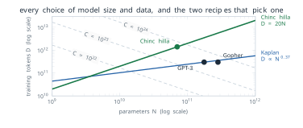
Hoffmann and colleagues gave the reason for the disagreement themselves, and it lies in how the earlier experiment was run. Kaplan and colleagues trained their models with a fixed number of training tokens and one learning-rate schedule, a cosine decay set for the full run of 130 billion tokens. To learn the loss of a model trained on fewer tokens, they read the loss from an earlier point of that longer run. At that point, however, the schedule had not yet decayed, so the loss was higher than that of a model whose schedule had been set to end there. Figure 4.10 draws the two schedules. In Hoffmann and colleagues’ account these intermediate losses are overestimates. Using them underestimates the value of training on less data, and this “eventually contributes to the conclusion that model size should increase faster than training data size as compute budget increases” (Hoffmann et al. 2022). They also found that matching the schedule to the number of training tokens gave the best final loss at every model size. A second difference was the range of sizes. Most of Kaplan’s runs were much smaller than Hoffmann’s, many with fewer than 100 million parameters, while most of Hoffmann’s had more than 500 million, and the frontier of loss against compute bends slightly over that range, so a line fitted at the small end does not carry to the large one. Neither difference touches the law. The power-law relation between loss and scale stood. What fell was the allocation drawn from it.
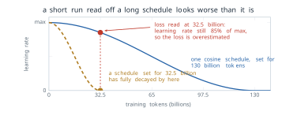
The result can be put to work at once. Suppose we have \(10^{23}\) operations, about a third of GPT-3’s compute, and want the compute-optimal model. The two identities Equation 4.1 and Equation 4.13, written before any number is substituted, are \(C = 6ND\) and \(D = 20N\). Together they give \[ C = 6N(20N) = 120N^2, \qquad N_{\text{opt}} = \sqrt{\frac{C}{120}} . \tag{4.14}\] With \(C = 10^{23}\), \(N^2 = 8.33 \times 10^{20}\) and \[ N_{\text{opt}} \approx 2.9 \times 10^{10}, \qquad D_{\text{opt}} = 20N_{\text{opt}} \approx 5.8 \times 10^{11} , \tag{4.15}\] about 29 billion parameters trained on 580 billion tokens. For comparison, take Kaplan’s exponent of 0.73 and anchor it on GPT-3, the model built to it. Scaling GPT-3’s 175 billion parameters down to a budget \(10^{23} / (3.15 \times 10^{23}) = 0.32\) of its own gives \(175 \times 0.32^{0.73} \approx 76\) billion parameters, about 2.6 times the compute-optimal size, trained on only about 220 billion tokens.
The test of the correction was a model. Gopher had 280 billion parameters and was trained on 300 billion tokens, close to Kaplan’s recipe. Chinchilla had 70 billion parameters, four times fewer, and was trained on 1.4 trillion tokens, about 4.7 times more, for about the same compute. On MMLU, the benchmark of Hendrycks and colleagues that poses multiple-choice questions in 57 subjects (Hendrycks et al. 2021), Gopher scored 60.0 per cent with five demonstrations in the prompt and Chinchilla 67.6 per cent (Hoffmann et al. 2022). Figure 4.11 shows the comparison. The fitted loss of Equation 4.9 agrees in direction: it gives 1.993 for Gopher’s configuration and 1.937 for Chinchilla’s. A model a quarter of the size was better at the same cost, and, as the next paragraph explains, it was also cheaper to use.
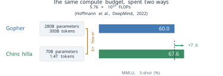
Twenty tokens per parameter became the starting point for training runs across the field. Within a year it was also being exceeded on purpose. The objective of Definition 4.3 counts only the cost of training. A model that will answer millions of queries is paid for again at every query, and the cost of each query grows with \(N\), not with \(D\). A smaller model trained on more tokens than the rule suggests costs more to train than the compute-optimal one of the same quality, but less to serve. Touvron and colleagues at Meta made this argument explicitly for LLaMA in 2023 and trained a model of 6.7 billion parameters on one trillion tokens, about 149 tokens per parameter (Touvron, Lavril, et al. 2023). The 8-billion-parameter model of Llama 3, released in 2024, was trained on about 15 trillion tokens, close to 1,900 per parameter (Meta AI 2024). The rule of Equation 4.13 answers the question it was asked. When the question includes serving, the answer moves. Figure 4.12 places the five models on one axis of tokens per parameter.
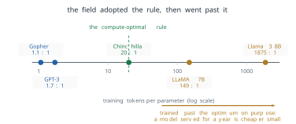
The rule has also been examined on its own terms. Tamay Besiroglu and three colleagues at Epoch AI reconstructed the data of Hoffmann and colleagues’ third approach in 2024. They found that the published fit of Equation 4.9 did not fit the data well and disagreed with the other two approaches, while a corrected fit agreed with them (Besiroglu et al. 2024). The constants of Equation 4.9 used in this section are therefore best read as illustrative of the form. The conclusion that parameters and tokens should grow together, at roughly twenty tokens per parameter, rests on all three approaches and was not overturned.
Loss is not capability
Everything so far concerns one number, the loss on held-out text, which falls smoothly and predictably as the scale grows. A user of a model does not see the loss. A user sees whether the model can add two numbers, answer a question or follow an instruction, and these are measured by accuracy on a task. The question this subsection asks is whether accuracy on a task follows the loss as smoothly as the loss follows the compute.
Consider three-digit addition, a task Brown and colleagues tested across the eight models of the GPT-3 family with a few demonstrations in the prompt (Brown et al. 2020). The models span three orders of magnitude, from 125 million to 175 billion parameters, all trained on 300 billion tokens. In the paper’s table of all results, the six smallest models scored below one per cent, the 13-billion-parameter model 8.4 per cent, and the 175-billion-parameter model answered 80.4 per cent correctly. Figure 4.13 plots the eight results against training compute. Over the same range the loss fell smoothly, as Equation 4.6 describes. The accuracy did not. It stayed near zero for most of the range and then rose steeply.
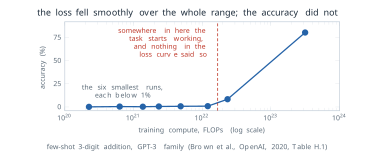
Jason Wei, Yi Tay, Rishi Bommasani and thirteen colleagues collected many results of this shape in Emergent Abilities of Large Language Models, published in Transactions on Machine Learning Research (TMLR) in 2022 (Wei, Tay, et al. 2022). The authors were at Google, Stanford University, the University of North Carolina at Chapel Hill and DeepMind. They took the word from a general definition rooted in Philip Anderson’s 1972 essay More Is Different, in which emergence is when quantitative changes in a system result in qualitative changes in behaviour, and gave it an operational meaning for model scale.
Definition 4.4 (Definition) In the sense of Wei and colleagues, an ability of a language model is emergent if it is not present in smaller models but is present in larger models. On a plot of task performance against scale, an emergent ability stays near chance up to some threshold and then rises well above it.
The examples they gathered came from several benchmarks and several model families: arithmetic, transliteration, multi-task question answering such as MMLU, and the Word in Context task, on which models stayed at the chance level of 50 per cent until the largest sizes. The thresholds differed from task to task, and they could not be predicted from the smaller models in the way the loss can. The assumption behind the definition is that the score on a benchmark faithfully reports the ability being measured. Wei and colleagues raised the possibility that the metric matters, and in 2023 it became the centre of an argument.
Rylan Schaeffer, Brando Miranda and Sanmi Koyejo of Stanford University asked whether emergence was a property of the models or of the way they were scored. Their paper, Are Emergent Abilities of Large Language Models a Mirage?, received an Outstanding Paper award at NeurIPS in 2023 (Schaeffer et al. 2023). Their argument can be made with arithmetic. An answer to a five-digit addition is scored by exact match: it counts as correct only if every digit is right. Suppose that a model produces each digit correctly with probability \(p\), and that the errors on different digits are independent. Then the probability that all \(k\) digits are correct is \[ \text{EM} = p^{k} . \tag{4.16}\] The independence assumption is an idealisation. Errors in addition are not independent, since a wrong carry tends to spoil the digits to its left, and the formula should be read as a model of the metric, not of the network. It is enough to show the mechanism.
For \(k = 5\) and \(p = 0.9\), the probability falls with every digit that must be right: the first two digits, the first four, and all five, the last being the exact-match score of Equation 4.16, \[ 0.9^2 = 0.81, \qquad 0.9^4 \approx 0.656, \qquad 0.9^5 \approx 0.590 . \tag{4.17}\] A model that is right on nine digits in ten is wrong on the whole answer more than four times in ten. Now let the per-digit accuracy improve steadily with scale, from 0.7 to 0.9 to 0.99. The exact-match score moves from \(0.7^5 = 0.168\) to \(0.590\) to \(0.99^5 = 0.951\), and below 0.7 it is smaller still: \(0.5^5 = 0.031\) and \(0.3^5 = 0.002\). A quantity that improves smoothly is reported by the benchmark as a flat line near zero followed by a steep rise. The rise is real, in the sense that the model does answer more sums correctly, but its sharpness is produced by the power \(k\). The slope of Equation 4.16 is \[ \frac{d\,\text{EM}}{dp} = k p^{k-1} , \tag{4.18}\] which is \(5 \times 0.3^4 = 0.04\) at \(p = 0.3\) and \(5 \times 0.99^4 = 4.8\) at \(p = 0.99\). The same improvement in \(p\) moves the reported score more than a hundred times as much near the top as near the bottom. Figure 4.14 shows one set of runs measured both ways.
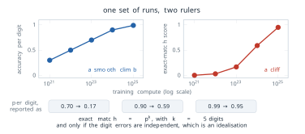
Schaeffer and colleagues tested the argument. For the arithmetic tasks they collected new outputs from models of the GPT-3 family and replaced exact match by measures that give partial credit, such as the per-token edit distance to the right answer, and the abrupt rises became smooth ones. They also produced apparent emergence in image models, where nobody had claimed it, by choosing a discontinuous metric. Their own assumption is the mirror image of Wei’s: that a continuous metric is the more faithful reading of capability. That is not always so. A user who needs the sum gains nothing from four correct digits out of five, and for that user exact match is the measure that counts.
The two papers together leave three claims with three different standings. That test loss falls smoothly with scale is measured, over many orders of magnitude, and was confirmed by the prediction for GPT-4. That capability jumps at a threshold depends on the metric: the jump is sharp under exact match and often smooth under a measure with partial credit. That nobody can say in advance which ability a larger run will bring, or at what size, remains true under either metric, because the scaling laws predict the loss and nothing in them maps a loss onto a particular task. The chain from compute to loss is a law. The chain from loss to capability is not. Figure 4.15 sets the three claims side by side.
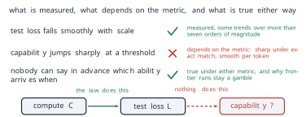
What the laws say about in-context learning
The question with which Chapter 3 closed can now be answered in part. In-context learning, as Definition 3.11 defines it, is measured by accuracy on tasks, with and without demonstrations in the prompt. The scaling laws of this section say nothing about it directly, since they predict the loss and nothing else. What they do predict is that the loss of a larger, well-trained model is lower, by a known amount, and the loss of Equation 3.27 is computed over a corpus that contains many passages in which a pattern is set up and then continued. A model that predicts such passages better is, in that limited sense, better at continuing a pattern from examples. The laws therefore make it unsurprising that few-shot performance improves with scale, which is what Brown and colleagues observed. They do not say at what size a particular task becomes possible from demonstrations, and they do not explain the mechanism by which a fixed network reads a task from its prompt. The metric argument applies here too: Brown and colleagues reported few-shot results largely as accuracy, and part of the abruptness of the gains may lie in the scoring. Whether in-context learning appears at a threshold or improves smoothly under a suitable measure is the same question that the previous subsection left open for every ability, and the evidence of this section does not settle it.
The laws have other limits. They are fitted to one architecture, one tokeniser and one distribution of text, and their constants change when any of these change. They predict the loss on text like the training text, not on text of another kind. They assume that more data of the same quality is available, and the compute-optimal rule makes data the resource that runs out first: at twenty tokens per parameter, a model of one trillion parameters needs some twenty trillion tokens. They say nothing about what the data should contain, how a model should be adapted after pre-training, or how it should behave towards the people who use it. Every laboratory that trained a large model after 2022 had the same public laws, the same public architecture and much the same recipe, and the models they produced behave very differently. The laws fix how much to buy. They do not fix what is built, and the next section turns to the decisions that do.
Exercises
- A model of 1.5 billion parameters, the size of GPT-2 in Table 3.3, is trained on 30 billion tokens. Use Equation 4.1 to find its training compute, and its number of tokens per parameter. (b) How many times GPT-3’s compute of Equation 4.2 is that? (c) Express GPT-3’s compute in petaflop-days. (d) Explain why training compute is a count and not a rate, and what the hardware changes about a run of fixed compute.
- Show that the least-squares slope of \(\log_{10} L\) against \(\log_{10} N\) for the six runs of Table 4.1 is exactly \(-\alpha_N\), and explain why the fit is exact here. (b) By what factor must \(N\) grow to lower the loss of Equation 4.4 by 10 per cent, with \(\alpha = 0.076\)? (c) Real runs scatter about the line. Explain why an error in the fitted slope matters more for a prediction two decades beyond the data than for one inside it.
Derive the factor 6 of Equation 4.1 for a single linear layer \(\mathbf{y} = W\mathbf{x}\) with \(W \in \mathbb{R}^{m \times n}\), applied to one token. (a) Count the operations of the forward product. (b) Write the two products of the backward pass, for \(\partial L / \partial \mathbf{x}\) and for \(\partial L / \partial W\), and count their operations. (c) Say which parts of a Transformer block this count leaves out, and why they matter more for a small model with a long context.
Using Equation 4.1 and Equation 4.13, find the compute-optimal model size and number of tokens for budgets of \(10^{21}\), \(10^{22}\) and \(10^{24}\) operations. (a) By what factor does \(N_{\text{opt}}\) grow for each tenfold increase in budget? (b) Compare with the factor \(10^{0.73}\) under Kaplan’s allocation, Equation 4.7. (c) Llama 3’s 8-billion-parameter model was trained on about 15 trillion tokens. Compute its training budget, and find the compute-optimal size for that budget.
Use the fitted loss Equation 4.9. (a) Compute the loss of a 29-billion-parameter model trained on 580 billion tokens, the answer of Equation 4.15, and of a 76-billion-parameter model trained on 220 billion tokens, Kaplan’s split of the same budget. Which is lower, and by how much?
- Use Equation 4.12 to compute \(N_{\text{opt}}\) for \(C = 10^{23}\) from the fit itself, and compare it with the 29 billion of the twenty-to-one rule. (c) In the light of the replication by Besiroglu and colleagues, which of the two answers would we rely on, and why?
Derive Equation 4.11 and Equation 4.12 from Equation 4.9 with the constraint \(6ND = C\), and show that the exponents of \(N_{\text{opt}}\) and \(D_{\text{opt}}\) sum to one. Under what condition on \(\alpha\) and \(\beta\) is the ratio \(D_{\text{opt}}/N_{\text{opt}}\) independent of \(C\)?
- For an answer of \(k = 3\) digits, find the per-digit accuracy \(p\) needed for an exact-match score of 50 per cent, and the same for \(k = 10\). (b) Suppose that \(p\) rises with compute as \(p = 1 - 0.7 \times 10^{-0.25 \, m}\), where \(m\) is the number of decades of compute above a reference run, for \(m = 0, 1, \ldots, 6\). Tabulate \(p\) and \(p^5\), and describe the two curves.
- A wrong carry tends to spoil the digits to its left. Does that make errors positively or negatively correlated across digits, and would exact match then be higher or lower than \(p^k\)?
A laboratory has a training budget of \(5 \times 10^{23}\) operations and expects its model to process \(2 \times 10^{13}\) tokens in deployment. Assume that serving costs \(2N\) operations per processed token, and that the loss is given by Equation 4.9. (a) Write the total cost of training and serving a model of size \(N\) trained on \(D\) tokens. (b) Use Equation 4.12 to find the compute-optimal model of the training budget and its loss. (c) A model half that size is trained to the same loss. Find the number of tokens it needs, its training compute and the total cost, and compare with the compute-optimal model. (d) Explain why the answer favours LLaMA’s choice of training past the rule of Equation 4.13, and name one cost that this argument leaves out.
4.2 The Model Zoo
Section 4.1 ended on a gap between what the scaling laws decide and what a laboratory builds. By 2023 every laboratory that trained large language models could read the same laws, the compute count \(C \approx 6ND\) of Equation 4.1, for \(N\) parameters trained on \(D\) tokens, and the compute-optimal ratio of about twenty tokens per parameter of Equation 4.13. All of them used the decoder-only Transformer of §3.3 and trained it on next-token prediction over web-scale text. The models they released, placed in time in Figure 4.16, still behave very differently. One family is sold only through an interface and refuses some requests that another completes. A second publishes its weights, so anyone can run and change the model. A third accepts images as readily as text. A fourth was reported to have been trained for a small fraction of what its competitors spent. If the law, the architecture and the objective are shared, these differences were not forced by scale. They are the result of choices made on top of the shared recipe, and this section asks what those choices are, what problem each one was made to solve, and what each one costs.
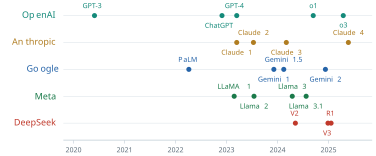
The choices are many, and naming them one model at a time gives a list of facts with no structure. A better start is to ask where in the life of a model a choice can be made. A model is first pre-trained, which fixes what it knows. It is then adapted to behave in a particular way towards the people who use it, a stage called alignment that Chapter 5 builds in detail. It is then served, which fixes what each answer costs in memory and in time. Finally it is used, through prompts and tools, the subject of Chapter 6. Chapters 1 to 3 and §4.1 settled one part of the first stage: the Transformer block, causal decoding and the amount of compute to spend. Every other decision at every stage is still open, and a laboratory makes all of them.
Five questions for a model card
To compare models built by different laboratories, we ask each of them the same questions. The document that answers them is the model card. Margaret Mitchell and eight colleagues, most of them at Google, proposed model cards at the ACM Conference on Fairness, Accountability, and Transparency in 2019 (Mitchell et al. 2019). A model card is a short document released with a trained model. It reports how the model was built, how it was evaluated and where it should not be used. Their assumption was that a standard report would let a reader compare models without access to their training. The laboratories adopted the name and the practice. What a card discloses is decided by the laboratory, and for a closed model the most basic numbers, the parameters and the training tokens, are often missing.
Definition 4.5 (Definition) The five dimensions of a model card, in the sense used in this book, are five questions that every large language model answers by the way it was built. Architecture asks which attention variant and which positional scheme the model uses, and whether it is dense or a mixture of experts. Alignment asks whose feedback shapes the behaviour of the trained model. Data asks for the mix, amount and quality of the training text. Openness asks whether the weights are released or the model is reachable only through an interface. Specialisation asks whether the model is general-purpose or built for reasoning, for several modalities or for small devices.
The framework turns a model card from a list into a set of answered questions. It also shows which questions a card leaves unanswered. Table 4.2 applies the data dimension to the families this section compares, using the rule of Equation 4.13 to place each one, and adds the openness dimension in its last column. The column before it is the number of training tokens per parameter, the quantity that §4.1 found should be about twenty for a compute-optimal run.
| Model | Released | Parameters | Training tokens | Tokens per parameter | Weights |
|---|---|---|---|---|---|
| GPT-3 | 2020 | 175B | 300B | 1.7 | closed |
| Chinchilla | 2022 | 70B | 1.4T | 20 | closed |
| LLaMA 65B | 2023 | 65B | 1.4T | 22 | released |
| Llama 2 70B | 2023 | 70B | 2.0T | 29 | released |
| Llama 3 8B | 2024 | 8.0B | about 15T | about 1,900 | released |
| Llama 3 70B | 2024 | 70.6B | about 15T | about 210 | released |
| Llama 3.1 405B | 2024 | 405B | 15.6T | 39 | released |
| DeepSeek-V2 | 2024 | 236B (21B active) | 8.1T | 386 per active parameter | released |
| DeepSeek-V3 | 2024 | 671B (37B active) | 14.8T | 400 per active parameter | released |
| GPT-4, Claude, Gemini | 2023 onwards | not disclosed | not disclosed | not disclosed | closed |
The table answers in part the question that §4.1 left open. After 2022 no open family trained near GPT-3’s ratio, which is consistent with the correction of Hoffmann and colleagues being adopted at once. The released models also went far past twenty tokens per parameter, and Llama 3 8B went past it by a factor of almost one hundred. As §4.1 argued, a model that will be queried many times is cheaper to serve when it is small, so its laboratory trains it on more tokens than the training-compute optimum. The largest Llama 3 model shows the other side of the same argument. Its training compute by Equation 4.1 is \[ C \approx 6 \times (4.05 \times 10^{11}) \times (1.56 \times 10^{13}) = 3.8 \times 10^{25} , \tag{4.19}\] the value Grattafiori and colleagues reported (Grattafiori et al. 2024), and at 39 tokens per parameter it sits within a factor of two of the ratio of Equation 4.13. A model of that size is meant to be the best the laboratory can make, not the cheapest to run. The three closed families publish neither column, and the table can say nothing about them. That silence is itself an answer to the openness question.
The fifth dimension, specialisation, includes the kinds of input a model accepts. The Gemini family of Google DeepMind, introduced in December 2023, was trained from the start on interleaved text, images, audio and video, so that one Transformer attends across all of them in one sequence (Gemini Team, Google 2023). Its second generation, Gemini 1.5, was offered first to a limited group of developers with a context of one million tokens, and its report tested contexts of up to ten million (Gemini Team, Google 2024). OpenAI’s GPT-4 also accepted images, but OpenAI did not publish how its vision was built (OpenAI 2023). The decision is one of data and training strategy, not one invented mechanism with a single paper behind it. Most of the decisions in the rest of this section are the other kind.
Compute spent after the question
The compute of Equation 4.1 is spent once, before any question is asked. Once a model is trained, each generated token costs one forward pass, about \(2N\) operations for a dense model with \(N\) parameters, as in Exercise 8 of §4.1. An answer of \(T\) tokens therefore costs about \(2NT\) operations whether the question is easy or hard. In the setting of §4.1 the only way to buy a better answer is to train a better model.
There is a second way, and it had been visible for some years before a laboratory built a product on it. Jason Wei and colleagues at Google showed at NeurIPS in 2022 that a large model answers arithmetic and reasoning questions more accurately when the demonstrations in its prompt include the intermediate steps of the solution (Wei, Wang, et al. 2022). The model then also writes steps before its answer. They called the written steps a chain of thought. The assumption is that the steps the model writes are useful computation and not decoration. Each step is a token, and each token is a forward pass, so a longer answer spends more compute on the same question.
Definition 4.6 (Definition) Test-time compute is the computation a trained model spends on one query, at the time the query is answered. A model scales test-time compute when it can convert more of this computation, typically a longer chain of intermediate tokens generated before the final answer, into higher accuracy.
In September 2024 OpenAI made test-time compute a design axis, in a report titled Learning to Reason with LLMs that described a model called o1 (OpenAI 2024). The model was trained with reinforcement learning to produce long chains of thought before answering. OpenAI reported that its accuracy rose smoothly both with the compute spent on that training and with the compute spent thinking at test time. The American Invitational Mathematics Examination (AIME) is a fifteen-question competition for strong secondary-school students. On its 2024 papers GPT-4o, the successor to GPT-4 that OpenAI released in May 2024, solved on average 12 per cent of the problems. The new model solved 74 per cent with one sample per problem, 83 per cent when the most common of 64 sampled answers was taken, and 93 per cent when 1,000 samples were re-ranked by a learned scoring function. OpenAI placed the last score among the top 500 students in the United States. The report published the trend, not the absolute amount of compute behind it.
The new axis does not contradict §4.1. It adds a second place to spend. A rough account shows the trade. Suppose a dense model of 70 billion parameters writes 10,000 tokens of reasoning before an answer instead of 200 tokens of plain answer. The extra cost is \[ 2N \, \Delta T = 2 \times (7 \times 10^{10}) \times 9{,}800 \approx 1.4 \times 10^{15} \tag{4.20}\] operations per query, a tiny fraction of the training compute of Equation 4.19, but paid again at every query. A laboratory that spends compute this way moves part of its budget from training, where it is paid once, to serving, where it is paid in proportion to use, and only for the questions where it helps. The same choice reappears in DeepSeek’s R1 model, below.
Whose feedback shapes the model
A model trained only on Equation 3.27 continues text. It has no notion of a helpful answer, and §3.3 showed that it has no term for truth. Every deployed family therefore adds a second stage of training that changes its behaviour, and the second dimension of the framework asks whose judgement that stage encodes. Three answers were in use by 2025. This section names them, places each in its history and states the assumption each makes. Their training procedures are the subject of §5.1.
The first answer is human preference. Paul Christiano and colleagues at OpenAI and DeepMind showed at NeurIPS in 2017 that an agent could be trained from human comparisons between pairs of its own behaviours, by fitting a reward model to the comparisons and optimising the agent against it (Christiano et al. 2017). Long Ouyang and colleagues at OpenAI applied the method to GPT-3 in 2022, in Training Language Models to Follow Instructions with Human Feedback, presented at NeurIPS that year (Ouyang et al. 2022). A team of about forty contractors wrote demonstrations and ranked the model’s answers, and the method became known as reinforcement learning from human feedback (RLHF). The result was InstructGPT, whose answers the labellers preferred to those of GPT-3 even when InstructGPT had 1.3 billion parameters and GPT-3 had 175 billion. RLHF trained ChatGPT. Its assumption is that the comparisons of a group of paid labellers are a faithful proxy for helpful and honest behaviour.
The second answer is a written set of principles. Yuntao Bai and colleagues at Anthropic introduced Constitutional AI in December 2022, in Constitutional AI: Harmlessness from AI Feedback (Bai et al. 2022). Human comparisons were still used for helpfulness. For harmlessness, the model was asked to critique and revise its own answers against a short list of principles, the constitution, and was fine-tuned on the revised answers. It was then trained on preferences judged by a model against the same principles, a step the authors called reinforcement learning from AI feedback. The assumption is that a written standard, applied by the model to itself, can replace human labels for harmlessness, and the benefit is that the standard can be read. Anthropic has used the method for its Claude models and has published the constitution.
The third answer is a check of the result. For a question with a verifiable answer, such as a mathematics problem with a known solution or a program with tests, the reward can be computed instead of judged. Zhihong Shao and colleagues at DeepSeek introduced Group Relative Policy Optimization (GRPO) in February 2024, in DeepSeekMath (Shao et al. 2024). It is a variant of the proximal policy optimization of Schulman and colleagues (Schulman et al. 2017) that drops one of its networks. Instead of a learned value model that estimates how good an answer should be, GRPO samples a group of answers to the same question and scores each against the mean of its group. In DeepSeekMath the answers were still scored by a learned reward model. DeepSeek-AI then used GRPO for its reasoning model R1 in January 2025, with rewards computed by rules, one for a correct final answer and one for the required format (DeepSeek-AI 2025). A first version, R1-Zero, was trained this way from the pre-trained model with no supervised examples and no learned reward model, and its accuracy on the 2024 AIME rose from 15.6 to 71.0 per cent. The released R1 was trained in four stages. It was first fine-tuned on thousands of long chain-of-thought examples, collected to make its output readable. It was then trained by reinforcement learning on reasoning tasks, with the rule-based rewards plus a reward for keeping to one language. Its own outputs, filtered by rejection sampling, together with general data gave about 800,000 examples on which the base model was fine-tuned afresh, and a last round of reinforcement learning used rules on reasoning prompts and learned reward models for helpfulness and harmlessness on general ones. On the 2024 AIME it reached 79.8 per cent with one sample, against 79.2 per cent for the version of o1 it was compared with. The assumption is that the task has a checkable outcome. Where it has not, as for the tone of a reply, the method has nothing to reward.
The memory of a conversation
The architecture decisions of the open families were made against one cost that the laws of §4.1 do not count, because it arises only when a model is served. A decoder generates text one token at a time, as Figure 3.18 showed, and each new token attends to every earlier one. Under the causal mask of Equation 3.15 the earlier positions never attend to later ones, so their keys and values, in every layer, are the same at every step of generation. Recomputing them for each new token would repeat work already done. Every serving system therefore stores them.
Definition 4.7 (Definition) The key-value cache (KV cache) of a decoder is the store of the key and value vectors of every position already processed, in every layer and every attention head that has its own keys and values. At each step of generation the new token’s keys and values are appended to it, and the new token’s queries attend to everything it holds.
The size of the cache follows from counting. Write \(L\) for the number of layers; in this section \(L\) counts layers, not loss. Write \(n_h\) for the number of query heads, the \(H\) of Equation 3.6, and \(n_{kv}\) for the number of heads that have their own keys and values. Let \(d_h\) be the dimension of one head and \(b\) the number of bytes per stored number. Each token adds one key and one value of dimension \(d_h\) for each of the \(n_{kv}\) heads in each of the \(L\) layers, so the cache grows by \[ \text{cache per token} = 2 \, L \, n_{kv} \, d_h \, b \quad \text{bytes,} \tag{4.21}\] and a context of \(T\) tokens needs \(T\) times as much. In multi-head attention as §3.1 defined it, every query head has its own keys and values, so \(n_{kv} = n_h\). Nothing in Equation 4.21 depends on the number of parameters. The cache grows with the length of the conversation, and it is held separately for every conversation a server handles at once.
A worked example shows the scale. Llama 3 70B has \(L = 80\) layers, \(n_h = 64\) query heads of dimension \(d_h = 128\), and stores numbers in 16 bits, \(b = 2\) (Grattafiori et al. 2024). If each query head had its own keys and values, Equation 4.21 would give \[ 2 \times 80 \times 64 \times 128 \times 2 = 2{,}621{,}440 \text{ bytes} = 2.5 \text{ MiB per token,} \tag{4.22}\] where one MiB is \(2^{20}\) bytes. At the model’s context length of 128k tokens, \(T = 131{,}072\), the cache would hold \(320\) GiB, with one GiB equal to \(2^{30}\) bytes. The weights themselves take \(70.55 \times 10^{9} \times 2\) bytes, about 131 GiB. For one long conversation the cache would be more than twice the size of the model, and four times the memory of one 80 GB accelerator. Figure 4.17 draws the growth. For long contexts it is the cache, not the parameters, that decides how much memory a model needs to serve.
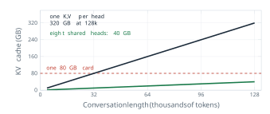
The term of Equation 4.21 that a designer can attack most directly is \(n_{kv}\). Noam Shazeer of Google proposed the extreme choice in 2019, in a note titled Fast Transformer Decoding: One Write-Head is All You Need (Shazeer 2019). In multi-query attention all query heads share one key and one value head, \(n_{kv} = 1\), so the cache shrinks by the factor \(n_h\). Shazeer’s assumption was that the heads need different queries but can read the same keys and values, and he reported a small loss of quality. Joshua Ainslie and colleagues at Google Research proposed the intermediate choice at the Conference on Empirical Methods in Natural Language Processing (EMNLP) in 2023, noting that multi-query attention can lose quality and make training unstable (Ainslie et al. 2023).
Definition 4.8 (Definition) In grouped-query attention (GQA) the \(n_h\) query heads of a layer are divided into \(n_{kv}\) groups of \(n_h / n_{kv}\) heads, and all heads of a group share one key projection and one value projection. For query head \(h\) in group \(g(h)\), \[ \mathrm{head}_h = \operatorname{Attention}\left(X \left(W^{(Q)}_h\right)^{\top},\; X \left(W^{(K)}_{g(h)}\right)^{\top},\; X \left(W^{(V)}_{g(h)}\right)^{\top}\right) , \tag{4.23}\] with \(\operatorname{Attention}\) as in Equation 2.25. Multi-head attention is the case \(n_{kv} = n_h\) and multi-query attention the case \(n_{kv} = 1\).
By Equation 4.21 the cache shrinks by the factor \[ \frac{\text{cache with } n_{kv} = n_h}{\text{cache with } n_{kv}} = \frac{n_h}{n_{kv}} . \tag{4.24}\] Take a layer with \(n_h = 8\) query heads in \(n_{kv} = 2\) groups. Each key-value head serves \(8 / 2 = 4\) query heads, and the cache holds 2 heads’ keys and values instead of 8, four times less. Figure 4.18 draws that configuration. Llama 3 70B uses \(n_{kv} = 8\) for its 64 query heads, a factor of eight, which turns the 320 GiB of Equation 4.22 into 40 GiB.
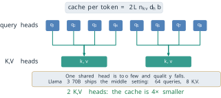
Ainslie and colleagues made two assumptions, and tested both on T5 models. The first is that grouping costs little quality. With eight groups their largest model came close to the quality of multi-head attention at a decoding speed close to that of multi-query attention. The second is that an existing multi-head model can be converted instead of trained again: the key and value heads of each group are averaged into one, and the model is trained for about five per cent of its original pre-training steps. GQA does not reduce the arithmetic of attention, since every query head still computes its own scores. What it reduces is the memory that must be held and, at every step of generation, read. Meta’s Llama 2 used GQA in its 34-billion and 70-billion-parameter models (Touvron, Martin, et al. 2023), and Llama 3 used it at every size.
Position as a rotation
The second architecture decision concerns the positional scheme. Section 3.1 added a sinusoidal vector to each embedding and showed, in Equation 3.2, that the encoding of position \(t + k\) is a rotation of the encoding of position \(t\). That structure is present in the input, but the model has to learn to use it, and the position is mixed into the content of every token before the projections of Equation 2.22 are applied. A different approach builds the rotation into the attention score itself.
Definition 4.9 (Definition) In rotary position embedding (RoPE) the query and key of each head are rotated, after projection, by angles proportional to their positions. The \(d_h\) components are taken in \(d_h/2\) pairs, and pair \(i\) is turned through the angle \(m\theta_i\) at position \(m\), with \(\theta_i = \beta^{-2i/d_h}\) for a base \(\beta\). Writing \(R_m\) for the block-diagonal matrix of these two-dimensional rotations, the attention score between a query at position \(m\) and a key at position \(n\) is \[ s_{mn} = \left(R_m \mathbf{q}\right)^{\top} \left(R_n \mathbf{k}\right) . \tag{4.25}\] No vector is added to the embeddings.
The property that makes the scheme useful follows in one line. A rotation matrix is orthogonal, so \(R_m^{\top} = R_{-m}\), and two rotations of the same plane add their angles, so \(R_{-m} R_n = R_{n-m}\). Therefore \[ s_{mn} = \mathbf{q}^{\top} R_m^{\top} R_n \mathbf{k} = \mathbf{q}^{\top} R_{n-m} \mathbf{k} . \tag{4.26}\] The score depends on the two positions only through their difference \(n - m\). In one pair of dimensions the argument is geometric, as Figure 4.19 shows. If \(\mathbf{q}\) and \(\mathbf{k}\) lie an angle \(\phi\) apart, turning the first by \(m\theta\) and the second by \(n\theta\) leaves them \(\phi + (n - m)\theta\) apart, and the dot product depends only on that angle and the two lengths. A query at position 2 and a key at position 5 score exactly as a query at 102 and a key at 105.
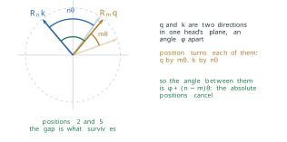
Jianlin Su and five colleagues at Zhuiyi Technology in Shenzhen proposed RoPE in April 2021, in RoFormer: Enhanced Transformer with Rotary Position Embedding, later published in the journal Neurocomputing (Su et al. 2024). They took the base \(\beta = 10{,}000\) of the sinusoidal encoding and assumed that attention should depend on how far apart two tokens are, not on where they stand. The scheme spread quickly through decoder models. The first LLaMA models of 2023 already used it (Touvron, Lavril, et al. 2023), as did the later Llama generations, DeepSeek’s models and most open families since.
The relative property is often read as a promise that a model trained on short contexts will work on long ones. It does not make that promise. Equation 4.26 guarantees that a gap seen in training scores the same wherever it occurs, but a gap longer than any in the training data gives angles that the model has never seen. The slow pairs show the problem most clearly. With \(\beta = 10{,}000\) and \(d_h = 128\), the slowest pair turns by \[ \theta_{63} = 10{,}000^{-126/128} \approx 1.15 \times 10^{-4} \text{ radians per position,} \tag{4.27}\] so a full turn takes about 54,000 positions. A model trained on contexts of 2,048 tokens sees this pair turn through at most \(2{,}048 \times 1.15 \times 10^{-4} \approx 0.24\) radians, under four per cent of a circle, and has learned nothing about the rest. Ofir Press, Noah Smith and Mike Lewis reported at the International Conference on Learning Representations (ICLR) in 2022 that models with rotary embeddings degraded quickly on inputs longer than those they were trained on (Press et al. 2022). Shouyuan Chen and colleagues at Meta then showed in 2023 that a LLaMA model could be extended from 2,048 to 32,768 tokens by scaling positions down into the trained range, with about a thousand steps of further training (Chen et al. 2023). Meta trained Llama 3 with the larger base \(\beta = 500{,}000\) on contexts of 8,192 tokens and reached its 128k context with a final stage of continued pre-training on long documents (Grattafiori et al. 2024). Long context is bought with training on long text, not given by the rotation.
Grouping divides the cache by \(n_h / n_{kv}\), but the cache of Equation 4.21 still grows with the number of key-value heads and their dimension. DeepSeek-AI attacked the remaining factor in DeepSeek-V2: A Strong, Economical, and Efficient Mixture-of-Experts Language Model, released in May 2024 (DeepSeek-AI 2024a). Instead of storing keys and values, the model stores one short vector per token from which all of them can be rebuilt.
Definition 4.10 (Definition) In multi-head latent attention (MLA) the hidden state \(\mathbf{h}_t\) of token \(t\) in a layer is projected down to a latent vector \[ \mathbf{c}_t = W^{DKV} \mathbf{h}_t \in \mathbb{R}^{d_c} , \tag{4.28}\] with \(d_c\) much smaller than \(2 n_h d_h\), and the keys and values of every head are projected up from it, \(\mathbf{k}_t = W^{UK} \mathbf{c}_t\) and \(\mathbf{v}_t = W^{UV} \mathbf{c}_t\). Only \(\mathbf{c}_t\) is cached.
At first sight the keys and values must be rebuilt from \(\mathbf{c}_t\) at every step, which would spend the compute that caching was meant to save. The rebuilding can be avoided. For one head, the score of a query \(\mathbf{q}\) against the key of token \(t\) is \[ \mathbf{q}^{\top} \mathbf{k}_t = \mathbf{q}^{\top} W^{UK} \mathbf{c}_t = \left( \left(W^{UK}\right)^{\top} \mathbf{q} \right)^{\top} \mathbf{c}_t , \tag{4.29}\] so the up-projection can be folded into the computation of the query, and the scores are taken against the latent vectors directly. The value projection folds in the same way into the output matrix \(W^{O}\) of Equation 3.6, which multiplies the concatenated outputs of the heads. This is also why MLA cannot use rotary embeddings as they stand. With a rotation the key becomes \(R_t W^{UK} \mathbf{c}_t\), so in the score the rotation \(R_t\) sits between the query and \(W^{UK}\). It depends on the position of the key, so \(W^{UK}\) can no longer be folded into a query that is computed once. DeepSeek-AI added a separate small key that carries the rotation, of dimension \(d_h^R = 64\), shared by all heads and cached beside \(\mathbf{c}_t\).
The saving can be computed from the configuration of DeepSeek-V2, which has \(L = 60\) layers and \(n_h = 128\) heads of dimension \(d_h = 128\), with \(d_c = 512\) (DeepSeek-AI 2024a). Per token and per layer, multi-head attention would store \(2 n_h d_h = 2 \times 128 \times 128 = 32{,}768\) numbers. MLA stores \(d_c + d_h^R = 512 + 64 = 576\), a factor of \[ \frac{32{,}768}{576} \approx 57 . \tag{4.30}\] In the terms of Equation 4.24, the cache is as small as that of grouped-query attention with \(576 / (2 \times 128) = 2.25\) groups. In 16-bit numbers the whole model stores \(576 \times 60 \times 2 = 69{,}120\) bytes per token, about 8.4 GiB for a context of 128k tokens, where multi-head attention would need about 480 GiB. Figure 4.20 shows the construction.
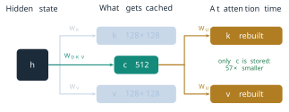
The compression has a price, and it lies in an assumption. Restricting every key and value of a layer to a subspace of dimension 512 is a real constraint: the model cannot represent keys and values outside it. MLA assumes that the keys and values a layer needs lie close to such a subspace. The model is trained with the constraint from the start, not compressed after training. DeepSeek-AI reported that in their comparisons MLA matched or exceeded multi-head attention, and that the cache of DeepSeek-V2 was 93.3 per cent smaller than that of the company’s earlier 67-billion-parameter dense model.
Paying only for the experts used
The last architecture decision concerns the feed-forward layers of Definition 3.3, which hold most of a Transformer’s parameters. In a dense model every parameter is used for every token, so the cost of a forward pass grows with the size of the model. A mixture of experts breaks that link.
Definition 4.11 (Definition) A mixture-of-experts layer replaces one feed-forward network by \(E\) feed-forward networks \(E_1, \ldots, E_E\), the experts, and a router with weights \(W_g\) that scores them, \(\mathbf{s}(\mathbf{x}) = \operatorname{softmax}(W_g \mathbf{x})\). For each token only the \(k\) experts with the highest scores are run, and their outputs are combined with weights renormalised over those \(k\), \[ \mathbf{y} = \sum_{i \in \operatorname{Top}k(\mathbf{s})} G_i(\mathbf{x}) \, E_i(\mathbf{x}), \qquad G_i(\mathbf{x}) = \frac{s_i(\mathbf{x})}{\sum_{j \in \operatorname{Top}k(\mathbf{s})} s_j(\mathbf{x})} . \tag{4.31}\]
The router does two jobs at once: it chooses which experts run, and it says how much each one counts. Take eight experts, \(k = 2\), and a token for which the router gives the scores 0.41, 0.27, 0.11, 0.08, 0.06, 0.03, 0.02 and 0.02. The two highest are kept and renormalised, \[ G_1 = \frac{0.41}{0.41 + 0.27} = 0.60, \qquad G_2 = \frac{0.27}{0.68} = 0.40 , \tag{4.32}\] and the other six experts do no work for this token. Figure 4.21 draws the example. Renormalising over the kept scores gives the same weights as applying the softmax only to the \(k\) largest router logits, which is how the layer was first written.
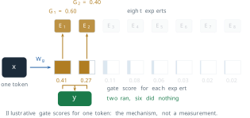
The idea is older than the Transformer. Robert Jacobs, Michael Jordan, Steven Nowlan and Geoffrey Hinton described adaptive mixtures of local experts in Neural Computation in 1991 (Jacobs et al. 1991). Noam Shazeer and six colleagues at Google Brain made it sparse and large at ICLR in 2017, in Outrageously Large Neural Networks: The Sparsely-Gated Mixture-of-Experts Layer, placing layers of thousands of experts between recurrent layers in models of up to 137 billion parameters (Shazeer et al. 2017). Their assumption was that a learned router would spread tokens usefully across the experts, and in practice it did so only with an extra loss that penalised routing most tokens to a few favourites. Mistral AI’s Mixtral 8x7B, released in December 2023, used eight experts with \(k = 2\) in every layer, holding 46.7 billion parameters and using 12.9 billion for each token, which the paper rounds to 47 and 13 billion (Jiang et al. 2024); §5.2 derives both figures from the model’s configuration. DeepSeek-AI split experts more finely and kept some always active: each expert layer of DeepSeek-V2 has 160 routed experts, of which 6 run for each token, and 2 shared experts that every token uses (Dai et al. 2024; DeepSeek-AI 2024a).
The compute count of §4.1 changes accordingly. Only the active parameters do arithmetic for a token, so the training compute of a mixture-of-experts model is about \(6 N_{\text{active}} D\). For DeepSeek-V2 that is \[ C \approx 6 \times (2.1 \times 10^{10}) \times (8.1 \times 10^{12}) \approx 1.0 \times 10^{24} , \tag{4.33}\] and for DeepSeek-V3, with 37 billion active parameters and 14.8 trillion tokens, about \(3.3 \times 10^{24}\), roughly a twelfth of the compute of Llama 3.1 405B in Equation 4.19. DeepSeek-AI reported that V3’s full training took 2.79 million hours of H800 accelerators, which at an assumed rental price of two dollars an hour comes to about 5.6 million dollars, a figure that leaves out the research and experiments before the final run (DeepSeek-AI 2024b). The saving is real, and it has three costs. Every parameter must still be held in memory, 236 billion of them for DeepSeek-V2, although only 21 billion are used at a time. The experts are spread across many accelerators, so tokens must be sent between them. And the rule of Equation 4.13 was fitted to dense models: by total parameters DeepSeek-V2 saw 34 tokens per parameter, by active parameters 386, and §4.1 gives no basis for choosing between the two.
Comparing the families with one number
With the decisions named, the remaining question is which family is ahead, and for several years the field answered it with one benchmark. MMLU, the Massive Multitask Language Understanding benchmark of Hendrycks and colleagues met in §4.1, poses 14,042 multiple-choice test questions in 57 subjects, each with four options, so that guessing scores 25 per cent (Hendrycks et al. 2021). The authors estimated that human experts would score about 89.8 per cent. Table 4.3 collects scores reported by the laboratories themselves.
| Model | Reported | MMLU (%) | How measured |
|---|---|---|---|
| GPT-3 175B | 2020 | 43.9 | five demonstrations (Hendrycks et al. 2021) |
| GPT-4 | 2023 | 86.4 | five demonstrations (OpenAI 2023) |
| Gemini Ultra | 2023 | 83.7 | five demonstrations (Gemini Team, Google 2023) |
| Gemini Ultra | 2023 | 90.0 | chain of thought, 32 samples (Gemini Team, Google 2023) |
| DeepSeek-V3 | 2024 | 88.5 | DeepSeek-AI’s evaluation (DeepSeek-AI 2024b) |
| DeepSeek-R1 | 2025 | 90.8 | DeepSeek-AI’s evaluation (DeepSeek-AI 2025) |
| o1 | 2025 | 91.8 | as listed by DeepSeek-AI (DeepSeek-AI 2025) |
The table tells two stories. From 2020 to 2023 the score rose from 43.9 to 86.4 per cent, the rise that came with the scale described in §4.1. After 2023 every frontier model lands within a few points of the expert estimate, and the differences between them become smaller than the effects of how the test is run. The two rows for Gemini Ultra differ by 6.3 points, more than the gap between any two other models in the table reported since 2023, and the only change is the way the model was prompted and its answer chosen. The laboratory headlined the higher number, the one above the human estimate.
Sampling error is not the problem. With \(n = 14{,}042\) questions and a score near \(p = 0.9\), the standard error of a score is \[ \sqrt{\frac{p(1 - p)}{n}} = \sqrt{\frac{0.9 \times 0.1}{14{,}042}} \approx 0.0025 , \tag{4.34}\] a quarter of a point, so a difference of one point between two runs is not chance. The problems are systematic. Aryo Pradipta Gema and colleagues examined a sample of MMLU questions in 2024 and estimated that 6.49 per cent contain errors, in the question or in the official answer, with 57 per cent of the sampled questions in virology affected (Gema et al. 2024). A model near 90 per cent may therefore be close to the highest score the answer key allows. Questions published on the web for years may also have appeared in the training data of later models, and nothing in a reported score says whether they did. A benchmark that every model passes has stopped separating them. This ceiling effect is the mirror image of the flat stretch near zero that §4.1 found for exact match. The laboratories moved to harder tests, such as GPQA, graduate-level science questions written to resist search (Rein et al. 2023), and SWE-bench, which asks a model to resolve real issues in open-source software (Jimenez et al. 2024). These measure the same families on axes where they still differ, and they too will saturate.
What the framework leaves open
The five questions organise what a laboratory chose. They do not say why one family behaves as it does. Most of the decisions in this section were published by the open families, because a released model can be inspected and a paper is part of the release. For the closed families the framework can be filled in only from what the laboratory chose to report, and the parameters, the training tokens and much of the alignment stay unknown. The numbers that are reported are reported by the party with the most interest in them, measured in conditions it chose, as the two Gemini rows show. The decisions also interact. Grouped-query attention, rotary embeddings, latent attention and experts were each introduced to solve one problem, but their benefits are measured on whole models in which many choices changed at once, and few laboratories publish the controlled comparisons that would separate them.
Finally, three of the names of this section have been introduced by what they do, not by how they train. RLHF, Constitutional AI and GRPO decide how a family behaves towards the people who use it, and this section has stated only their histories and their assumptions. Section 5.1 builds each of them from the objective of Equation 3.27, which, as §3.3 showed, has no term for truth or for usefulness.
Exercises
A laboratory releases a model with this card: 32 billion parameters, all used for every token; grouped-query attention with 8 key-value heads; rotary position embedding; trained on 18 trillion tokens; tuned on human preference comparisons; weights released; text only. (a) Place the model on each of the five dimensions of Definition 4.5. (b) Compute its tokens per parameter and its training compute by Equation 4.1, and compare the ratio with Equation 4.13. (c) Name one question of the framework that a card of a closed model typically leaves unanswered, and say what the reader can and cannot conclude from the gap.
Llama 3 8B has \(L = 32\) layers, \(n_h = 32\) query heads and \(n_{kv} = 8\) key-value heads of dimension \(d_h = 128\), and stores 16-bit numbers. (a) Use Equation 4.21 to compute its cache per token, and the cache for contexts of 8,192 and 131,072 tokens, in GiB. (b) Repeat with \(n_{kv} = n_h\). (c) The weights take about 15 GiB. At what context length does the cache with grouped-query attention equal the weights? (d) A server answers 32 conversations at once, each of 8,192 tokens. How much cache does it hold?
- A layer has \(n_h = 8\) query heads in \(n_{kv} = 2\) groups. How many query heads share each cache, and by what factor is the cache smaller than with multi-head attention? (b) Give the same two numbers for \(n_{kv} = 1\) and for \(n_{kv} = 8\), and name the three cases. (c) Explain why grouped-query attention reduces memory but not the number of attention scores computed.
- Using \(R_m^{\top} = R_{-m}\) and \(R_a R_b = R_{a+b}\), prove Equation 4.26, and show that shifting both positions by the same amount leaves every score unchanged. (b) Write \(R_m\) for one pair of dimensions as a \(2 \times 2\) matrix and verify \(R_m^{\top} R_n = R_{n-m}\) directly.
- With \(\beta = 500{,}000\) and \(d_h = 128\), find the slowest angle \(\theta_{63}\) and the number of positions in one full turn. Compare with Equation 4.27, and explain why a larger base helps a model trained on long contexts.
- Show that the value up-projection \(W^{UV}\) of Definition 4.10 can be folded into the output matrix \(W^{O}\), as Equation 4.29 does for \(W^{UK}\). (b) Explain why the fold fails for the key when the key is rotated, \(\mathbf{k}_t = R_t W^{UK} \mathbf{c}_t\), by a matrix that depends on the key’s position. (c) Compare the cache per token of DeepSeek-V2’s MLA with that of Llama 3 70B’s grouped-query attention by Equation 4.21, both in 16-bit numbers, and with the cache Llama 3 70B would need under MLA with \(d_c = 512\) and \(d_h^R = 64\).
A mixture-of-experts layer has eight experts and top-two routing. (a) For router scores 0.30, 0.25, 0.20, 0.10, 0.07, 0.04, 0.02, 0.02, compute the two gate weights of Equation 4.31. (b) Show that applying the softmax to the two largest router logits alone gives the same weights as renormalising the full softmax over them. (c) Mixtral 8x7B holds 46.7 billion parameters and uses 12.9 billion per token. If it were trained on 8 trillion tokens, what would its training compute be, and what would a dense model of the same total size cost on the same tokens? (d) Name two costs of the mixture that the compute count does not show.
A dense model of 70 billion parameters answers a question either directly, in 300 tokens, or after a chain of thought, in 8,000 tokens. (a) Compute the inference compute of each answer at \(2N\) operations per token. (b) A model of 405 billion parameters answers directly in 300 tokens. Which costs more per query, the small model thinking or the large model answering? (c) Using the training compute of Equation 4.19, after how many queries does the extra test-time compute of the small model equal that training budget? (d) Say which kinds of question favour each strategy.
- Two models score 90.4 and 91.8 per cent on MMLU’s 14,042 test questions. Use Equation 4.34 to find the standard error of the difference, assuming independent errors (the variance of a difference of independent scores is the sum of their variances), and decide whether the difference could be chance. (b) Suppose 6.5 per cent of the questions have a wrong official answer, and a model that knows the subject never gives the official wrong answer. What is the highest score it can reach? (c) Explain why the two Gemini rows of Table 4.3 are a larger problem for comparison than the answer to (a). (d) Propose one property a benchmark must have to separate models that all score above 90 per cent on MMLU.